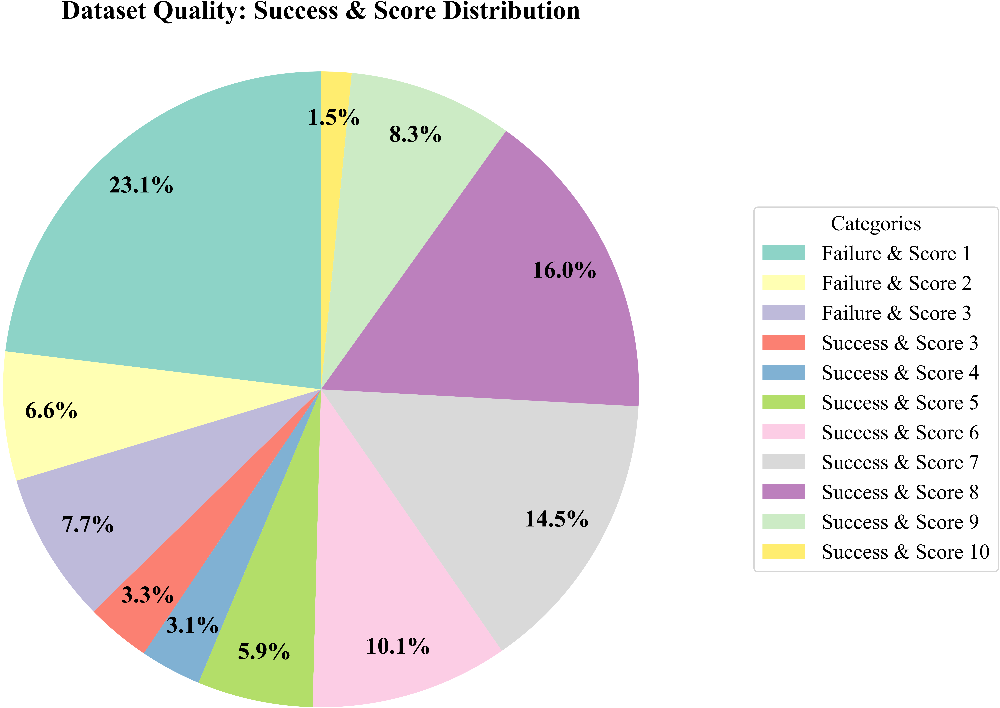

Dataset Statistics

Figure 3. Representative task statistics, including the number of demonstrations and total duration for single-arm and dual-arm manipulation tasks.

Figure 4. Expert Grading distribution across Eval-Actions Small. The subset covers both failed executions and successful trajectories with a broad quality spectrum.